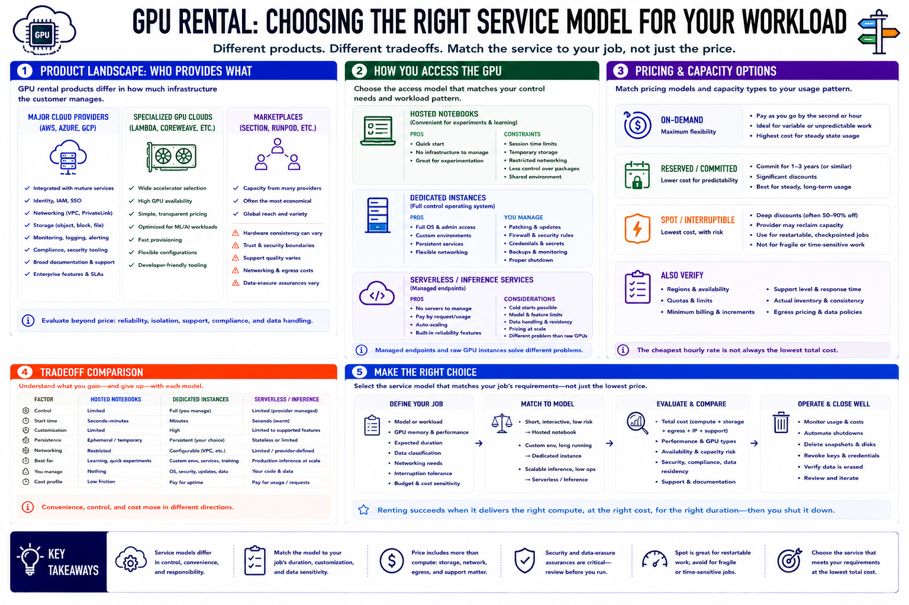

Understanding GPU Rental Options
Connecting to LMS... Progress: in progress

Narration
GPU rental products differ in how much infrastructure the customer manages. Major cloud providers integrate GPU instances with mature identity, networking, storage, monitoring, and compliance services. Specialized GPU clouds may offer a wider accelerator selection or simpler pricing. Marketplace platforms can provide economical capacity from multiple hosts, but hardware consistency, trust boundaries, support, networking, and data-erasure assurances require careful review.
Hosted notebooks are convenient for experiments and learning because an interactive environment can start quickly. They may have session limits, temporary storage, restricted networking, or less control over system packages. Dedicated instances provide an operating system and administrative control, making them suitable for custom environments and persistent services, but the renter owns patching, firewall rules, credentials, and shutdown.
Serverless-style inference services hide much of the machine lifecycle and bill by request, execution time, or reserved endpoint capacity. They can reduce operations for supported models, though cold starts, model restrictions, data handling, and pricing at sustained volume must be evaluated. A managed endpoint and a raw GPU instance solve different problems even when both run the same model.
On-demand pricing favors flexibility. Reserved or committed capacity can lower cost for predictable long-term use. Spot or interruptible capacity offers discounts because the provider may reclaim it, making it appropriate for restartable and checkpointed work. Also verify regions, quotas, minimum billing, support, and actual inventory. Select the service model that matches the job's duration, control needs, interruption tolerance, and data sensitivity, not simply the lowest advertised hourly rate.